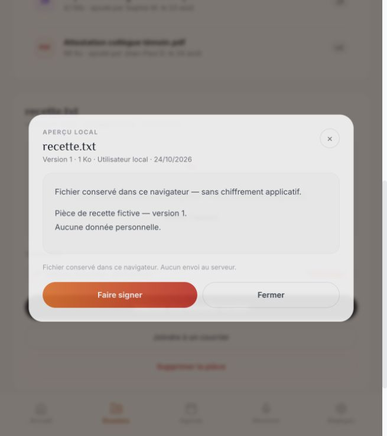

Corrections du prototype local — 24 octobre 2026. Ce lot ne constitue pas une validation de production ni une recette exhaustive de tous les écrans.
65 tests automatisés réussis : 20 régressions existantes, 30 contrôles étape 1, 11 nouveaux contrôles fichiers/audio/cache/exports/signature/PV, 4 exports Python. Les 11 tests utilisent des doubles de stockage et de lecture audio ; ils ne prouvent pas le fonctionnement du micro ni de tous les navigateurs. Référence gelée : 324 fichiers conformes.
Fidélité : pas de changement de palette, typographies, navigation ou structure générale. Changements ciblés : libellés factuels, formulaire existant réutilisé pour la signature, contenu réel dans l’aperçu, attributs d’accessibilité, défilement admin et styles réservés à l’impression. Aucune comparaison visuelle exhaustive pixel à pixel effectuée. Référence gelée intacte ; sauvegarde avant correction conservée.
| Constat | État | Résultat et limites |
|---|---|---|
| F18 | Corrigé | Messages IA : texte préparé distingué du reçu ; historique local annoncé en cas d’échec. |
| F19 | Corrigé, logique testée | Export ICS réel avec date, horaires, lieu, notes et échappement. Import dans un agenda tiers non testé. |
| F20 | Partiel | Extraits réellement stockés et relus dans IndexedDB. PDF sources, démarrage hors connexion et synchronisation automatique restent à réaliser. |
| F21 | Corrigé dans le code | Libellés et état des interrupteurs de préférences accessibles. Lecture avec un lecteur d’écran non retestée. |
| F22 / F26 | Implémenté, validation matérielle restante | Audio conservé comme Blob ; écoute réelle et journal local. Simulation non enregistrable. Tests avec stockage/lecteur simulés : OK. Micro, permissions, lecture réelle et transcription restent à vérifier ou intégrer. |
| F23 | Corrigé en local | Vrai sélecteur, fichiers IndexedDB, téléchargement, versions, restauration et aperçu. Import texte, conservation après rechargement et aperçu confirmés dans le navigateur. PDF/images et grandes tailles restent à tester visuellement. |
| F24 | Correction technique à valider | Console admin : largeur minimale et défilement horizontal pour rendre le contenu accessible. Pas de nouvelle navigation. Recette mobile/tablette de cette console encore nécessaire ; adaptation ergonomique à arbitrer. |
| F25 | Corrigé, logique testée | CSV réel du journal courant. Présenté comme local, sans fausse signature cryptographique. |
| F27 | Corrigé | Un PV terminé après changement de parcours ne force plus la navigation ; demande doublonnée bloquée. |
| F28 | Partiel | Demande de formation persistante et explicitement locale. Transmission au bureau non connectée. |
| F29 | Implémenté, parcours à retester | Import CSV des élus ouvre le formulaire d’import et crée des membres locaux ; étape terminée seulement après import. Envoi des invitations non connecté. |
| F30 | Corrigé | Formulaire de signature textuelle, validation et persistance ; pied de génération raccordé. Édition/enregistrement confirmés dans le navigateur. Signature électronique distincte, non connectée. |
| F31 | Corrigé et retesté | Les éléments de démonstration supprimés ne réapparaissent plus à la restauration. |
| F32 | Corrigé et retesté | CSV : guillemets, séparateurs cités, courriels invalides et doublons sans distinction de casse. |
| F33 | Corrigé et retesté | Demande de relecture = En relecture, jamais Relue automatiquement. Circuit multiutilisateur non connecté. |
| F34 | Corrigé et retesté | Dates calendaires impossibles refusées. |
Restent ouverts : connexion Supabase et déploiement OVH, authentification/MFA réelle et permissions serveur, chiffrement et rétention/destruction audio, transcription audio, signature électronique, envois mail/SMS/push et invitations, demandes au bureau, publication distante, paiement, mode hors connexion complet. Les fonctions IA réelles n’ont pas été relancées dans ce lot : les changements de logique asynchrone ont été testés avec réponses simulées. Impression/PDF visuel, console admin mobile/tablette et autres formats de pièces doivent encore être vérifiés.
